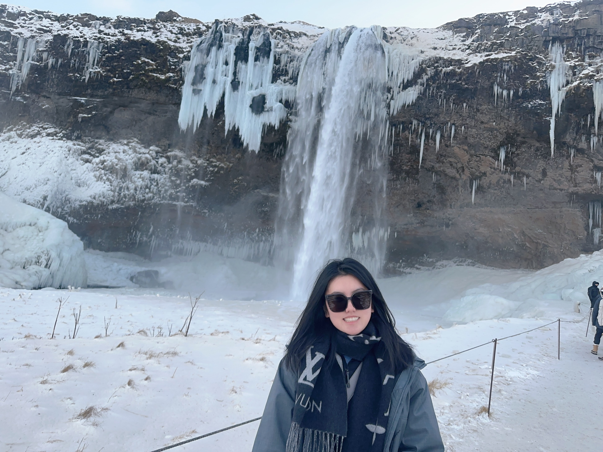

PhD Candidate
EDUCATION
- 2019-2025 Ph.D. Theoretical Physics Tongji University Supervisor: Prof. Gang Yan
- 2022-2023 Visiting Learning and Decision making University College London Love Lab
- 2015-2019 B.Sc. Applied Physics Tongji University
RESEARCH INTERESTS
My research interest centers around
- Complex systems
- Computational neuroscience
- AI for science
and taking great videos while traveling. During my PhD study, I used physical methodologies and machine learning techniques into my research to explore hidden structure patterns, dynamic behaviour and control in complex networks especially in brain networks.
Feel free to look at my research page to learn more!
HONORS & AWARDS
- China Scholarship Council (CSC) Joint Scholarship, 2022.
- Outstanding Doctoral Freshman Scholarship in Tongji University, 2020.
- Excellent student in Tongji University, 2019&2018.
- Science and Innovation Youth Scholarship in Tongji University, 2018.
TECHNICAL SKILLS
- Programming Languages: Python, MATLAB, C/C++, etc.
- Softwares and Tools: Linux, PyTorch, etc.
CONTACT